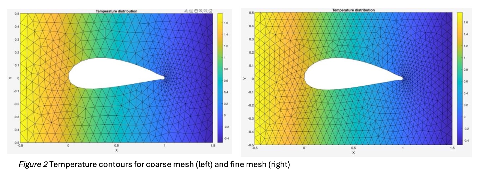
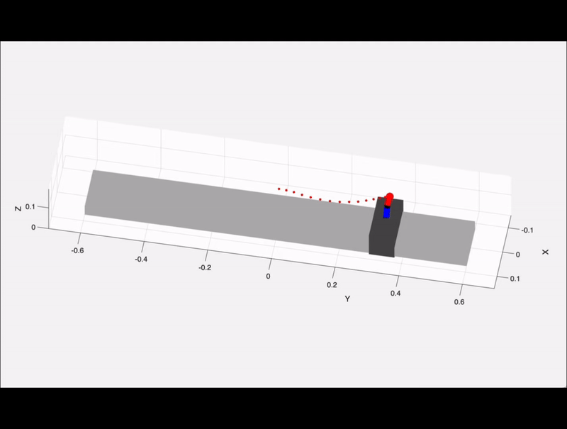

Projects
Robotics • Mechanical Design • Simulation

Kangaroobot
A kangaroo-inspired walking robot with 8 servos & Raspberry Pi that achieves walking speed of 30cm/s
View details →
mTPAD Redesign
Structural redesign for a mobile Tethered Pelvic Assist Device to increase modularity and load bearing
To be kept confidential :)

2D FEM Solver
Developted MATLAB FEM for potential flow around airfoil cutout, postprocessing and verification.
View details →

PRRR Autonomous Surveillance Robot/h2>
A 4 DOF manipulator intended for under-vehicle inspection and maintainance. Verified kinematics, workspace, and trajectory analysis using DH table and MATLAB.
View details →